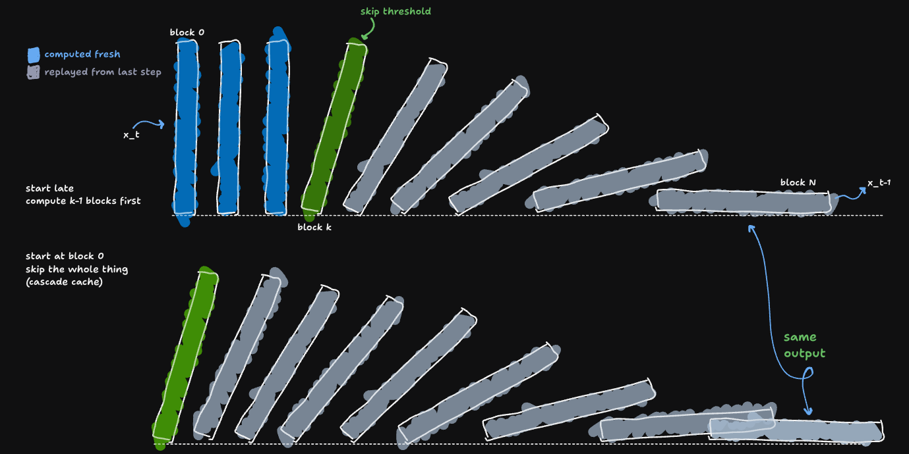
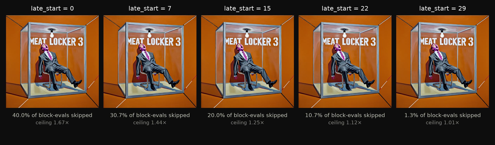
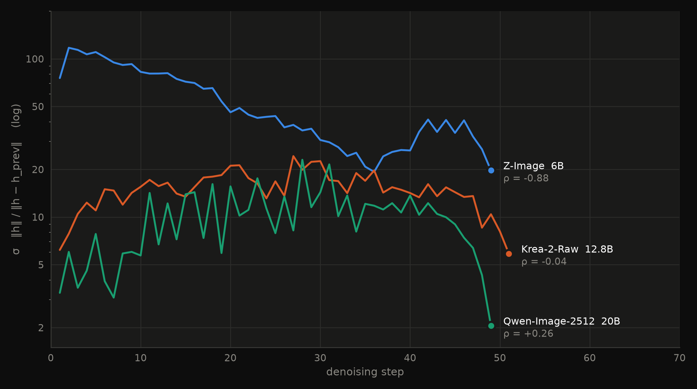
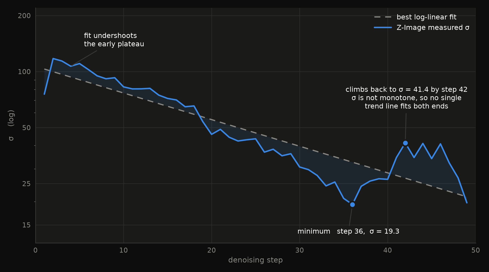
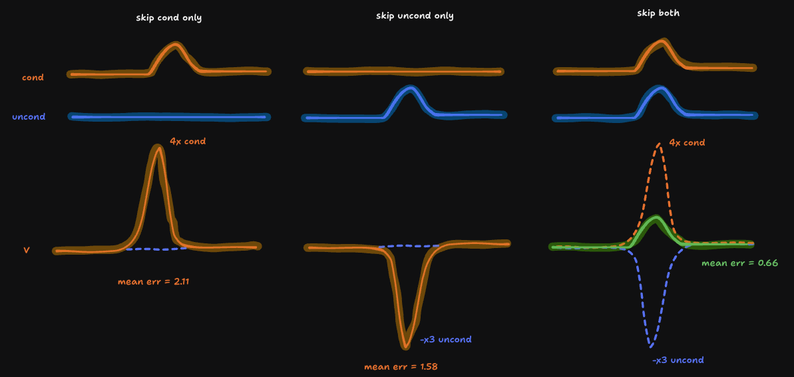
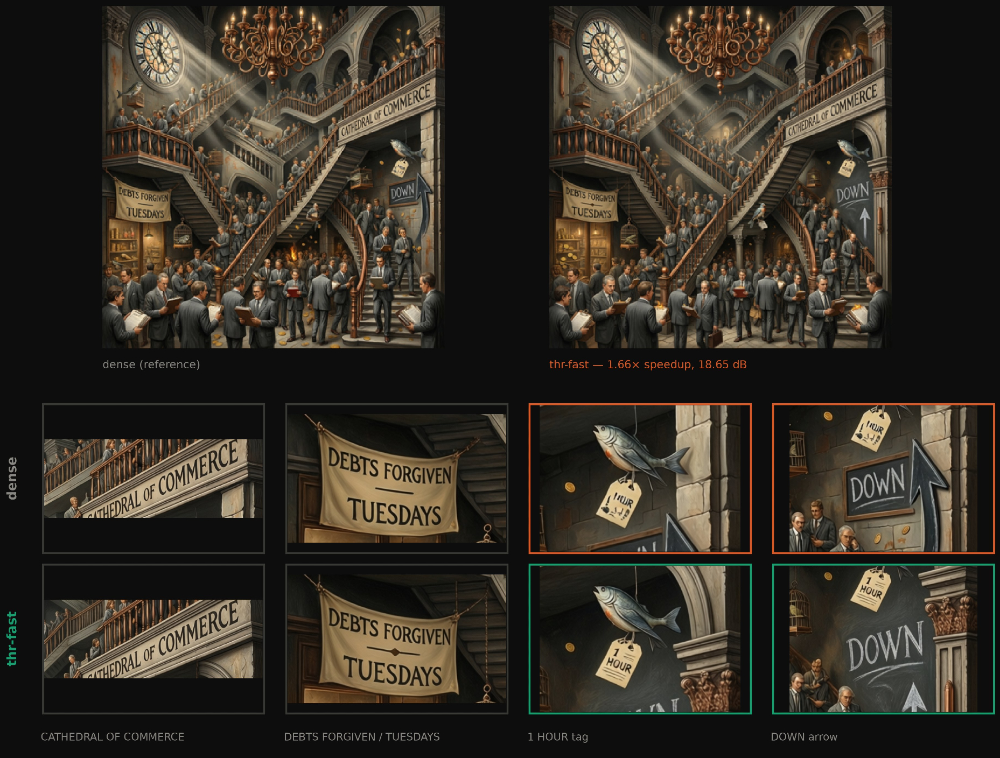
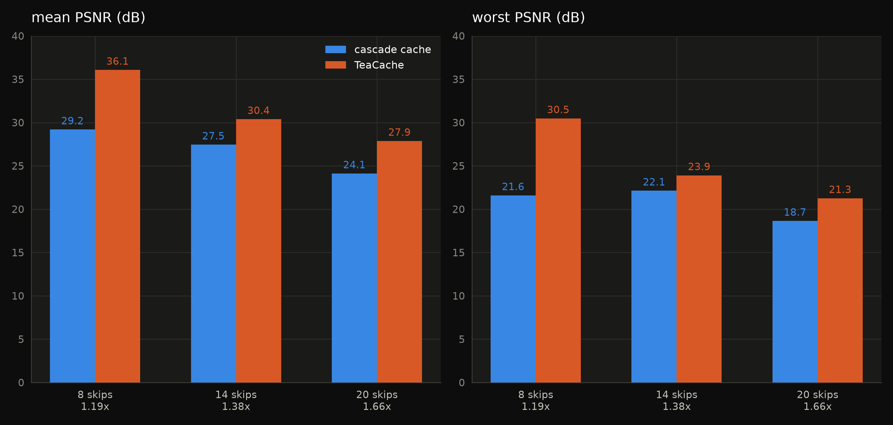
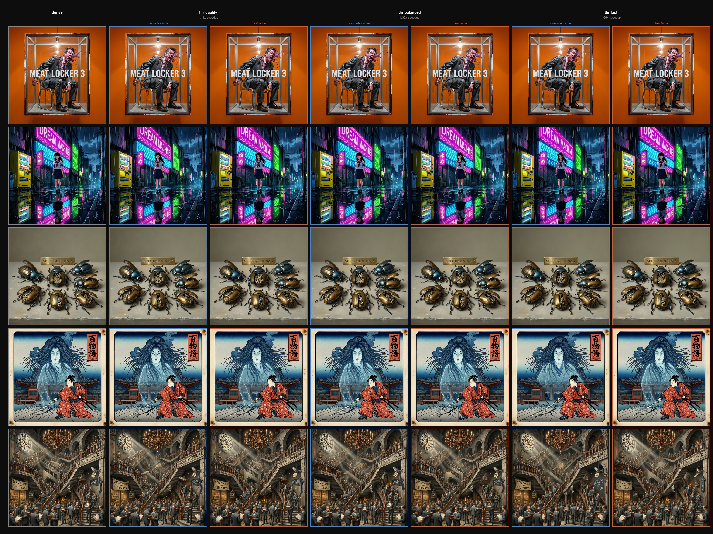
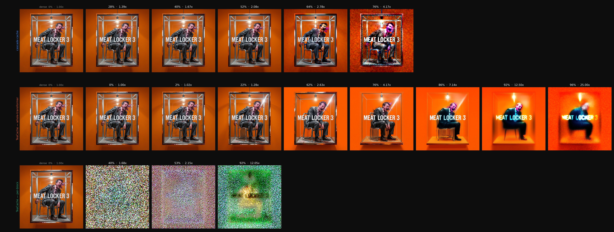
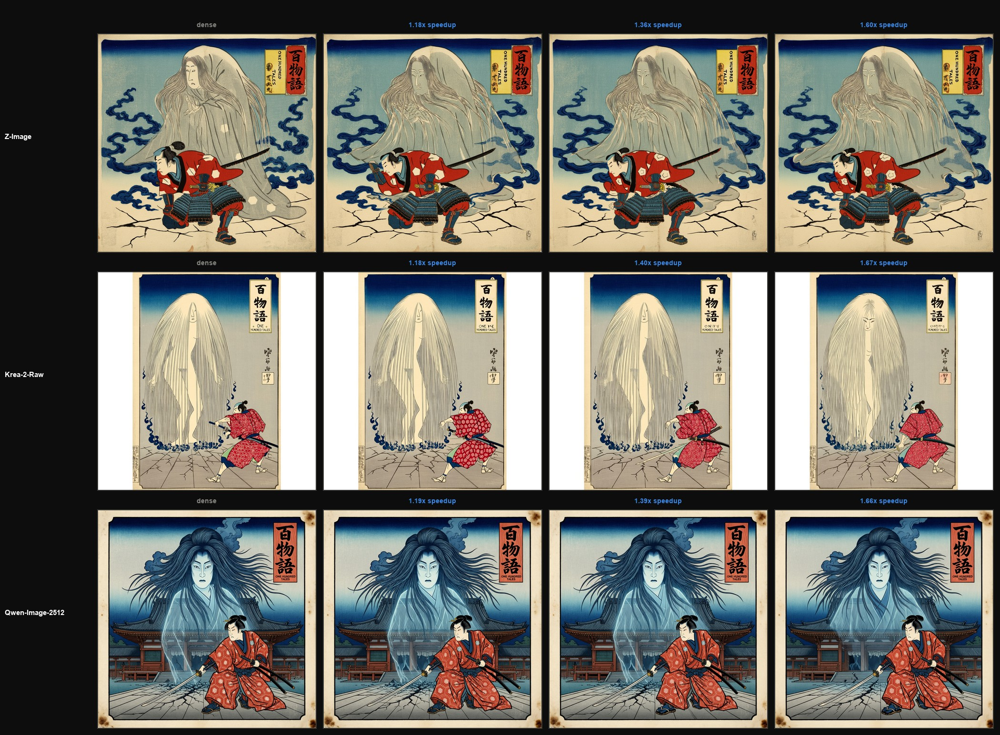

Cascade Cache

the whole method in a nutshell, tip block k and everything after it has no choice but to fall the same way, whether you computed the blocks before k or not
Introduction
There's a common trick for speeding up image or video models which is on steps where not much is changing, skip some of the internal computation and reuse what you computed last time. Every version of this trick I've seen shares the same assumption that skipping the later parts of the model is safer than skipping the earlier parts, so a careful implementation only touches the tail end. As far as I can tell, that assumption doesn't actually hold up. When I tested it, reaching back to computation step 40 and reaching back to step 2 gave me the same image, bit-for-bit because both of those turned out to just be "skip this step" wearing different clothes, and there are only ever two things a step can do skip, or don't.
Here's the reasoning that got me there, and I could be missing something. These models generate an image by running it through a stack of transformer blocks in this case, one after another, repeated over many steps, and consecutive steps tend to look almost identical to each other. If one block reuses what it computed last time instead of recomputing, every block after it should be forced to reuse its old output too, since feeding an unchanged input into a block that hasn't changed ought to give the same answer back. That's the part I can actually prove, and I've checked it holds bit-for-bit, not just on paper. What I'm less sure about is everything I built on top of it so that is for you to judge.
Diffusion Transformers
Here's the minimum you need. The model builds an image over \(T\) steps (bear with me on these unusual notations, there is much worse to come), and on each step it runs the current image through a stack of \(N\) processing blocks, one after another, block 1 takes block 0's output as its input, and so on through block \(N-1\). Same blocks, same weights, every step. I'll write \(h_b^{(t)}\) for what block \(b\) outputs on step \(t\), so a full step is just \(h_b^{(t)} = \text{Block}_b(h_{b-1}^{(t)})\), repeated \(N\) times.
The thing that makes any of this cacheable at all is that step \(t\) and step \(t-1\) feed nearly the same input into block 1. The image doesn't move much between consecutive steps that's basically the design of these models, so a block computing on step \(t\) is doing almost the same work it did on step \(t-1\). That redundancy is what every caching method, this one included, is trying to spend.
Now a "skip" at block \(b\) basically means don't recompute it, just hand back what block \(b\) produced on the last step:
\[h_b^{(t)} := h_b^{(t-1)}\]
And the near-universal way people decide which blocks get that treatment is the later ones. The reasoning goes that the early blocks are still figuring out what the image even is, so recompute those. Late blocks are just refining texture, so it's safer to let those go stale.
That reasoning is what the rest of this piece takes apart.
The Cascade Rule
Here's the claim. If block \(k\) is skipped at step \(t\), meaning \(h_k^{(t)} := h_k^{(t-1)}\), then every block after it can be skipped too, with no change to the step's final output \(h_{N-1}^{(t)}\).
The proof is short enough to just write out. Block \(k+1\) receives \(h_k^{(t)}\) as its input. Because of the skip, that's the same value as \(h_k^{(t-1)}\). The block itself hasn't changed since last step, its weights are frozen, so feeding it the same input it saw last step produces the same output it produced last step:
\[\text{Block}_{k+1}(h_k^{(t-1)}) = h_{k+1}^{(t-1)}\]
So \(h_{k+1}^{(t)} = h_{k+1}^{(t-1)}\) too, whether you bother recomputing block \(k+1\) or not. Recomputing it changes nothing. Now block \(k+1\) is in exactly the position block \(k\) was in. Feed that same argument into block \(k+2\). Then \(k+3\). It doesn't stop until block \(N-1\).
That's usually where people stop reading this fact. It gets stated as a safety result. Skipping propagates forward for free, so once block \(k\) is decided safe to skip, everything past it is safe too, at no extra cost. Fine. But read it again from the other direction. Once block \(k\) is skipped, \(h_{N-1}^{(t)} = h_{N-1}^{(t-1)}\) for every choice of \(k\) you could have made. Not just the one you picked. All of them.
Which means the question "where do I start skipping from" was never really a question. Block 0 through block \(N-1\) gives \(N\) nominal starting points, plus the option not to skip at all, so \(N+1\) apparent decisions on the table. Every one of those \(N\) starting points produces the identical final output. So there are really two outputs. Skip, or don't. Everything past that is compute you're choosing to spend, or not, on a result that was already decided the moment you picked either one.
This isn't unprecedented in practice, just unproven. FBCache, one of the more common speedup tricks people already reach for on these pipelines, computes a cheap signal off the first block's residual and uses it to decide, once per step, whether to run the rest of the transformer at all. That's the same move, skip from the front, all the way through, and skip nothing otherwise. But it gets there as a heuristic that happens to work well, not as something anyone proved. Nobody wrote down why starting the skip at block 1 has to give the exact same output as starting it at block 30, because until you actually do the induction, it isn't obvious that it does.

Z-Image, same seed, same skipped steps. Every image above is identical, only the block the cascade starts from changes
The cache is \(O(1)\)
The same argument that collapses \(N+1\) choices to two also tells you something about memory, and I only noticed it because I went looking for why my code was OOMing on me.
Once block \(k\) is skipped, block \(k+1\) ignores its input entirely and just hands back its own cached value. So does block \(k+2\). So does every block after \(k\), all the way to block \(N-1\). Each of those blocks does write something to its cache slot on a skipped step. Nothing ever reads most of those slots back. The only cache entry that actually escapes the loop and gets used is block \(N-1\)'s, because that's the one whose output becomes the step's final result.
Caching a tensor per block, for \(N\) blocks, is wasted memory for \(N-1\) of them. Caching just the last one is enough, and it's not a small difference in practice. On Qwen-Image-2512, 60 blocks, a resolution high enough that each activation tensor is sizeable on its own, two streams running for classifier-free guidance, the naive per-block cache runs into several gigabytes. That was enough to push a 96GB card into an OOM. Keeping only the last block's cache brought that down to about 90 megabytes.
One caveat, so this doesn't sound like a free lunch that always applies. This only holds if the transformer's final output is a function of the last block alone. Some architectures accumulate intermediate block outputs into a list and use all of them after the main loop, not just the last one.
Building the scheduler
The cascade rule tells you that a step's decision is binary. It does not tell you which steps to spend that decision on. Skip the wrong ones and the image degrades, so I needed some way to rank a step's staleness before deciding whether to skip it. This is where it stops being a proof and starts being a messy build log.
An error bound
For a block's hidden state, I defined a signal to drift ratio (not signal to noise that we are generally used to). The two pieces of it are simple on their own. \(|h_{t-1}|\) is the size of the value I'm about to reuse. \(|h_t - h_{t-1}|\) is the size of the actual change between steps, which becomes exactly my error if I replay \(h_{t-1}\) instead of computing \(h_t\). Relative error, the standard way anyone measures it, is that change divided by the signal's own scale: \[\text{relative error} = \frac{|h_t - h_{t-1}|}{|h_{t-1}|}\] \(\sigma\) is just that fraction flipped upside down. So \(\sigma\) isn't a score I picked because it happened to correlate with quality in some experiment, it's the reciprocal of relative error by definition, which means a threshold on \(\sigma\) is a threshold on relative error, exactly, with no calibration step or curve fitting in between.Now my moat is writing kernels so here you go (you can skip this part if you want). Computing it the obvious way costs three reads from memory and two kernel launches, one to get \(|h_{t-1}|\), one to get \(|h_t - h_{t-1}|\). Both are reductions over the same two tensors, so I fused them into a single pass. One kernel that reads each tensor once, uses 128-bit vector loads and packed bf16 arithmetic to handle two elements per instruction, and reduces with warp shuffles instead of a second kernel launch. A Triton version exists as a fallback for anything without a CUDA toolchain. It agrees with a plain PyTorch computation to about \(10^{-7}\) relative error, and on an RTX PRO 6000 it runs 10 to 27 times faster than the naive two reduction version, hitting 83% of DRAM peak bandwidth on tensors too large to fit in L2. For a kernel that only reads its inputs once, that is close to the actual roofline. The next lever, unrolling the grid stride loop for more memory requests in flight, was worth maybe another 5 to 8%, on a kernel that is already under 1% of total inference time. I left it alone.
None of that mattered for whether the scheduler worked. What mattered was what I did with \(\sigma\) once I had it, and that is where things started going wrong.
Sigma likes the wrong steps
The first time I looked at a real \(\sigma\) trace, I noticed it wasn't flat. \(|h|\) starts large, because early in the process the image is still mostly noise and the activations are just big numbers, and it shrinks steadily as the model commits to a specific image. That decay has nothing to do with which steps are safe to skip. It's a property of the trajectory, not of stability. But a raw threshold on \(\sigma\) can't tell the difference between the two, so it ends up doing something I didn't want, which is preferentially flagging the earliest steps as the most stable ones, when the earliest steps are actually the ones doing the most structural work.I measured how bad this was by checking the Spearman correlation between step index and \(\sigma\), across the eligible window, on three models.
Z-Image came out at (-0.825). Krea-2-Raw at (-0.519). Qwen-Image-2512 at (+0.074), essentially no correlation at all. On Z-Image specifically, \(\sigma\) falls from about 88 down to about 20 almost monotonically, which means the top 8 steps by \(\sigma\) are just the first 8 eligible steps in order. Ask the scheduler for its highest quality budget, and it spends the entire thing on the steps that build the image's structure in the first place. That's exactly backwards from what "highest quality" is supposed to mean.
Qwen barely showed this problem. Krea sat in between. So this wasn't a universal bug I could fix once and move on from. It was a per model failure mode, worse on some architectures than others, and I had no principled reason yet for why.

sigma across all three models
The Fix
The obvious fix for a decaying baseline is to divide it out. Normalize \(\sigma\) by its own trajectory mean, and now a value of 1 means "typical for this run" instead of some raw number that means different things at different points in the trajectory. \[\hat{\sigma}_t = \frac{\sigma_t}{\text{mean}_t(\sigma_t)}\] It doesn't work, \(\text{mean}_t(\sigma_t)\) is a single positive constant for a given trajectory. Dividing every value in a list by the same positive constant doesn't change their order. Whatever set of steps a threshold or a top-k rule picks out of \(\sigma\), it picks the identical set out of \(\hat{\sigma}\). The early bias I was trying to fix is a ranking problem, and this fix cannot touch a ranking, by construction, before I ever generate a single image to check.It isn't useless. It buys one real thing, a single \(\tau\) that transfers across prompts, since raw \(\sigma\)'s scale depends on the prompt and the normalized version doesn't. That's a legitimate benefit. It's just not the benefit I thought I was getting when I added it.
Detrending, same bias at a different address
Dividing by a constant can't fix a ranking problem, but dividing by the actual trend can. Fit \(\log \sigma \approx a + bt\) over the trajectory and divide that out instead of the mean. \[\hat{\sigma}_t = \frac{\sigma_t}{\exp(a + bt)}\] This does change which steps get picked, and it asks a more sensible question than the raw score does. Is this step more stable than its position in the trajectory would predict. On Z-Image it moved the correlation from (-0.825) to nearly zero, and shifted the top 8 selection away from the earliest steps entirely.It still doesn't work, just not for the reason I expected. Across five prompts on Z-Image, detrending improved the image on three of them and degraded one so badly the worst-case score dropped by 6.4 dB. The mean across all five barely moved.
What happened is I traded one bias for another. Raw \(\sigma\) piles its skips against the start of the trajectory. Detrended \(\sigma\) moved a chunk of them to the very end instead, the steps that render final texture, which turn out to be just as fragile as the early ones for a different reason. The trace explains why a single trend line was never going to work here. Z-Image's \(\sigma\) doesn't decay smoothly, it falls for most of the run and then climbs back up near the end. It's U-shaped, not a line, so fitting a line to it leaves error at both ends, and the detrended score reads that leftover error as stability.

Z-Image's sigma trace against its own best log-linear fit
Updated scheduler
Neither fix made it in. Every schedule that shows up for the rest of this post runs on the raw, un-detrended \(\sigma\), early bias and all. I tried the normalized version and the detrended version, none of which worked so I decided to use the option that was at least simple and already measured over one I couldn't yet show was actually better.
I did try to check whether \(\sigma\) was earning its keep as a ranking function and not just a budget dial. Match it against alt2, against plain evenly-spaced skipping, against the provably optimal top-k selection, all at the exact same skip count, and see who wins. At 20 skips they landed within half a dB of each other, and my first read was that \(\sigma\) selection buys nothing. That reading was wrong. 20 was the ceiling: the no-two-consecutive-skips rule caps an eligible window of 40 steps at 20 skips, and right at that ceiling every schedule is forced into essentially the same alternating pattern no matter how it ranks steps. They agreed because they were the same schedule just with different names I suppose. Whether \(\sigma\) actually helps pick which steps, at a budget loose enough to disagree with even spacing, is still open. I never ran that test.
What shipped regardless is raw \(\sigma\), thresholded per prompt to realize a target skip count, three budgets called thr-quality, thr-balanced, and thr-fast below, sitting at 40%, 70%, and 100% of that same ceiling. That calibration, choosing how many steps to spend, is the real work happening under those three names, not step selection. Two more rules ride along with it. Never skip two steps in a row, a second skip back to back reuses a value that's already two steps stale and the error compounds. And the first several steps and the last one or two always run dense, structure gets decided early and texture gets rendered late, and both felt too important to gamble on. The early bias in \(\sigma\) itself rides along uncorrected through all of this, and it's part of why the TeaCache comparison later goes the way it does.
Guidance changes the arithmetic
Everything so far assumed one forward pass per step. Under classifier-free guidance that's false. Some pipelines call the transformer twice per step, once for the prompt and once for an empty prompt, then combine the two outputs. If the cache doesn't know that's happening, two things go wrong at once. The two passes end up sharing the same cache slots, so one starts replaying the other's activations. And a step counter that increments once per forward call now advances twice as fast as the actual denoising schedule, so any logic checking whether a step is past a boundary is checking the wrong number. Both failures produce a plausible looking image. Neither one crashes. The fix is to key all cached state on which of the two streams, prompt or empty prompt, is actually running, which collapses to nothing extra when there's only one stream to begin with.
Once the two streams are properly separated, the obvious next move is to skip them differently. The unconditional stream is driven by a fixed, contentless prompt, so it should evolve more smoothly and tolerate more staleness. Skip it hard, keep the real prompt dense, and get cheap compute back.
That's exactly backwards. Guidance combines the two streams as:
\[v = (1+g)\,c - g\,u\]
so an error in the conditional stream gets multiplied by \(1+g\) on its way into the output, and an error in the unconditional stream gets multiplied by \(g\). At a typical guidance scale of 3, that's a 4x amplification on one side and 3x on the other. Skip both streams by the same amount at the same time, though, and the two errors are strongly correlated, since they see the same latent and skip the same blocks, and differ only in which prompt they're conditioned on. Correlated errors cancel in a subtraction. I measured this on a small, randomly initialized transformer, isolating the arithmetic from anything the trained weights might be doing. Skipping both streams gave a mean error of 0.655. Skipping only the unconditional stream, half the compute saved, gave 1.579. Skipping only the conditional stream gave 2.108. The ordering is inverted from the compute savings. Skipping twice as much produces less than half the error.
The cancellation depends on the two errors actually being close to equal, and I only checked that at one guidance scale. Push \(g\) high enough and the two streams' errors could plausibly separate rather than track each other, the differential term the cancellation leaves behind scales with \(g\) too. I don't know where that stops holding. I haven't gone looking for it.

skip one stream and its scaled error rides straight into v - skip both and the two scaled pulls fight, so v barely moves. measured at g=3 on a randomly-initialized transformer
The PSNR rant
I already said PSNR is a bad way to judge these images, and that's not news, everyone doing this kind of work already distrusts it. What's worth actually explaining is why it's specifically bad for caching, because the reason is different from the usual complaints about PSNR being a poor proxy for human perception.
PSNR measures distance from a reference image, pixel by pixel. Caching can hurt an image in two completely different ways, and PSNR can't tell them apart. first being - the cached image is genuinely blurrier, has lost detail the dense image had. The other is mostly harmless - skipping perturbs the model's internal trajectory just enough that it lands on a different, but equally sharp, sample from the same distribution. Same quality, different specific image. Both of those tank PSNR by roughly the same amount, because PSNR only sees how far a result is from the reference, not why it's far.
The clearest case I found was on Krea-2-Raw, a batch of text-heavy prompts, comparing a schedule that skips every other eligible step against the dense reference. Its worst PSNR across five prompts was 19.47 dB, a score that on its own reads as a near-total failure. The image was fine. It kept 94.6% of the dense image's sharpness by a reference-free measure, the text rendered cleanly, and looking at the two images side by side the actual difference was that some objects had moved to slightly different positions in the frame.
The sharpest version of this showed up on Qwen-Image-2512, on a prompt with four separate pieces of in-image text. Its worst PSNR in the entire run, 18.65 dB, belonged to the fastest schedule I tested. And in that specific image, all four text elements came out as legible as the dense reference, and two of them, a price tag and a hand-lettered arrow, came out more legible, sharper and cleaner than in the version PSNR considers the ground truth.

worst PSNR in the entire Qwen-Image-2512 run - also the one with the most legible text
TeaCache Comparison
At some point the only honest thing to do was test this against the method it was supposed to improve on. TeaCache is the standard baseline for this kind of caching. It decides, once per step, whether to skip the entire transformer, based on accumulating a distance metric between consecutive timesteps and comparing it to a threshold. So I gave it its own properly fitted coefficients, and fixed the same CFG bug in it that I described earlier.
The comparison has to be at matched skip count, not matched threshold, because the two methods realize different numbers of skips from the same setting. So I fixed the number of skipped steps, on Qwen-Image-2512, and compared mean and worst-case PSNR at three budgets. Now despite the rant I will use PSNR as the metric because I don't see anything better than that as of now and I want a metric to compare things.
At 8 skips, a 1.19x speedup, my schedule scored 29.20 dB mean, 21.60 dB worst case. TeaCache scored 36.08 and 30.49. At 14 skips, 27.45 versus 30.39. At 20 skips, 24.13 versus 27.88. TeaCache won every single cell, by 3 to 7 dB in the mean, and its sharpness deviation was equal to or better than mine at every budget too, meaning it wasn't winning by drifting less while degrading more. It was just closer to the dense reference on every axis I measured.
It won those cells while ignoring the two rules I built to keep my own schedule safe. At 20 skips, on one prompt, it averaged 6.8 consecutive skip pairs, the exact back-to-back skipping my no-two-consecutive rule forbids outright, and on another it skipped the very last denoising step, which my boundary protection never allows. It still won by 3.8 dB on that budget. Whatever is carrying TeaCache's quality, it isn't caution. My safety rules were reasoned from how error compounds and where structure and texture get decided, and on this model they turned out not to be what separates the two methods at all.

matched-budget PSNR, our schedule vs TeaCache, on Qwen-Image-2512
That table is an average over five prompts. Here's every one of them, individually, at all three budgets, both methods, on the model the dial behaves best on:

every prompt, every budget, both methods, on Qwen-Image-2512 - the same matched skip counts as the table above (8 / 14 / 20 skips)
The reason traces back to where each method spends its skips. TeaCache concentrates them late in the trajectory, after the image has mostly converged and there's genuinely less happening. My \(\sigma\) based schedule, because of the early bias I described earlier, spends its budget mid trajectory, while the image is still actively forming. And TeaCache re-decides this every single step, checking the actual live trajectory each time. My schedule is computed once, from a single dense pass, before generation starts.
Push to failure
The matched-budget comparison stops at 20 skips, which is a modest fraction of a 50-step run. I wanted to know what happens if you keep going past where either method is designed to operate, pushing both up to 76% of all steps skipped, driven by each method's own threshold, no quality metric involved in the decision at all.
Up to about half the steps skipped, both methods look similar, a slight, expected softening. Past that point mine falls apart. A sharpness ratio above 1 sounds like more detail, but it's not, it's high frequency noise, the image filling with structure that isn't picture content. Mine crosses into visibly broken around 55% skipped and by 64% is unrecognizable, a kind of RGB-split static where the subject used to be. TeaCache, run to the same 76% skipped on the same prompt, is still a coherent, correctly rendered image the whole way. It doesn't visibly break anywhere on this ladder.

pushed past the normal operating range - cascade cache breaks into RGB-split noise, TeaCache (whole-transformer) degrades gracefully
My first guess at why was the reuse operator. My method replays a stale value outright, zeroth order. TeaCache keeps the current, live input and adds a cached delta to it, first order, which should be more forgiving because it never completely discards what's actually happening right now. That's a clean, plausible story, and I almost considered it as the explanation.
I took my own step selection, the specific set of steps my \(\sigma\) schedule picks, and ran it through TeaCache's exact first order operator instead of my own. If the operator was the problem, this should have fixed it. It didn't. The image exploded identically either way. The operator turned out to be irrelevant. What actually breaks is which steps get skipped, not how the skip is applied once you've chosen the step.
What didn't survive
Not everything I tried made it into the sections above, and pretending otherwise would make the parts that did look more inevitable than they were.
Before any of this, I spent a while on caching individual channels within a block instead of whole blocks, an idea borrowed loosely from self-supervised learning, where you mask out redundant channels and only recompute the ones still carrying information. It worked in isolation. Combined with block-skip caching, the two together did worse than block-skip alone, not better, dropping quality from where the simpler method sat by nearly 3 dB. Two techniques that each look reasonable on their own can still actively interfere with each other.
And early on I believed, and wrote down, that later denoising steps are inherently more stable than earlier ones. My own first batch of measurements contradicted that immediately. It wasn't even a close call.
What actually survives

the same prompt, dense and three speedups, on all three models
It all started with a single observation about what a single skip forces once you make it, and followed it as far as it would go to see what kind of scheduler you could build on top. Some of what came out of that holds up regardless of how the rest of the story ends. The cascade rule itself, and the two things that fall out of it directly, that late_start is a dial with no actual effect on the image and that the cache only ever needs to hold one tensor, not one per block. The result about guidance canceling correlated error while amplifying uncorrelated error. And the case that PSNR measures distance from a reference, not quality, and that those are different things often enough to matter.
The scheduler itself, the actual point of building all this, lost to the method it was supposed to improve on. It does win in one place where TeaCache didn't have proper coeffs to work from.
So here's what I actually have. A rule that makes the safe part of caching free, which I can prove and which you can verify yourself against a stock, unmodified model. That's less than I set out to build. It's still worth writing down, and if you look at the code and think I got something wrong, I'd genuinely like to hear it. Or if you have ideas on improving this, my DMs are always open.